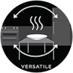
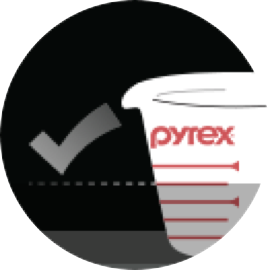

Corelle Brands
검색전 세계 가정에서 가장 많이 찾아볼 수 있는
세계적인 디너웨어
Introduction
세계 유일의 3중 압축 천연 비트렐 유리로
가벼우면서도 견고한 아름다움을 보여주는
건강한 디너웨어 코렐입니다.
Why Corelle
코렐이 사랑받는 이유
-

뛰어난 내열성
-
가장자리 특수
가공처리 -
세척이 쉽고 오래
사용해도 깨끗 -

유해물질
걱정 없는
천연 유리재질 -

실굽이 없는
효율적 수납 -

얇고 가벼워
사용이 편리함
가볍지만 강하다
세계 유일의 3중 압축 유리 재질 비트렐 사용
비트렐(Vitrelle™) 유리란 3중의 유리 재질 레이어를
열과 압력만으로 압축한 유리의 고유명칭입니다.
유백색 유리를 투명한 유리가 위아래로 감싸는
3중형태로 열과 압력만으로 압축시켜 탄생되었습니다.
믿을 수 있는 퀄리티
미국 뉴욕 코닝 공장에서 생산되는
믿을 수 있는 제품 퀄리티
미국에서 생산, 엄격한 유해물질 규제법인 캘리포니아
법령 65규격에 부합하는 유약처리 없는
건강한 디너웨어를 만들어 오고 있습니다.
코렐의 제조과정
- 3중압축 무공해 유리재질. 내후성/세척용이
- 고온접합 내구성/내열성. 높은 유리로 탄생
- 고온압축 얇고 가벼워 사용/수납용이
-
패턴작업
100% 전사처리, 열처리로
벗겨지지 않는 패턴
아름다운 패턴디자인
국내의 트렌드에 맞춘 아시아 패턴 디자인
디자인에 대한 니즈가 큰 한국 소비자들을 위해
국내 디자이너가 주축을 이룬 ‘아시아 디자인 팀’은
한국 소비자들의 기호에 맞춰 고급스러우면서도 독특한
디자인의 신제품을 선보이고 있습니다.
Market Street
New York
100년 전통의 파이렉스 이야기
뉴욕의 트랜드를 느낄 수 있는 프리미엄 디자인
세계의 트랜드를 한 자리에서 만날 수 있는 도시, 뉴욕.
뉴욕의 라이프 스타일을 느낄수 있는 MSNY
새로운 아이보리 칼라로 탄생한
마켓 스트리트 뉴욕은 풍성한 디자인 패턴과 어우러져
당신의 테이블 공간에 뉴욕의 영감을 선사합니다.